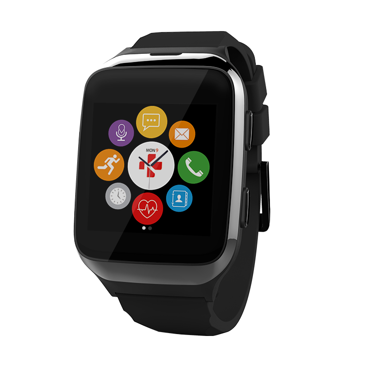

El ZeSplash 2 de MyKronoz en color negro es un reloj Bluetooth táctil resiste al agua con recepción llamadas y audio que te mantiene conectado con tu teléfono. Con una pantalla táctil a color y micrófono y altavoz integrados, el ZeNano te permite realizar llamadas directamente desde tu muñeca.
El ZeSplash 2es un Smartwatch compatible con smartphones Android 4.3 y iOS 7.0 ó superior, que es resistente al agua el sudor y las salpicaduras que permite, descargar la agenda y gestionar el registro de las llamadas de nuestro móvil entre otras muchas funciones, como la de podómetro (cuenta pasos), calorias, etc
PRECIO: $1,299.00